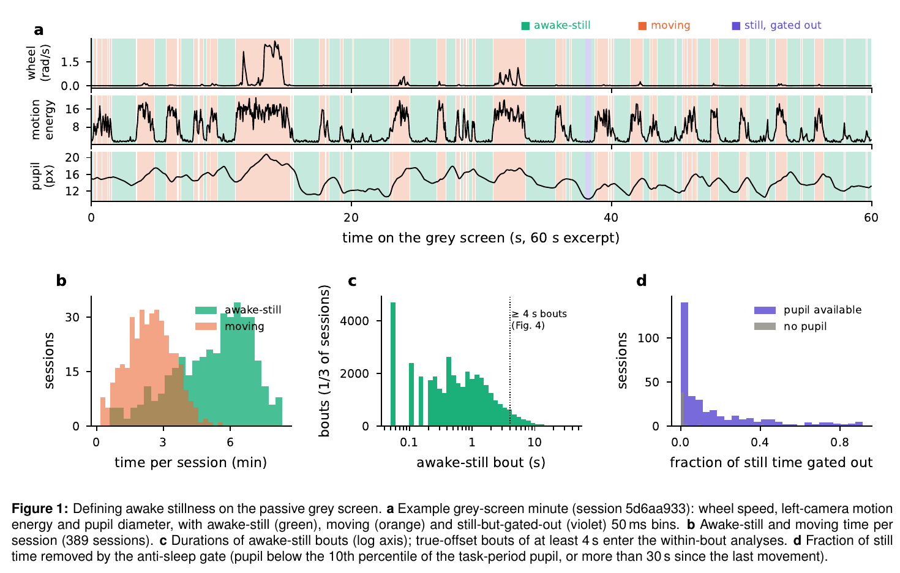
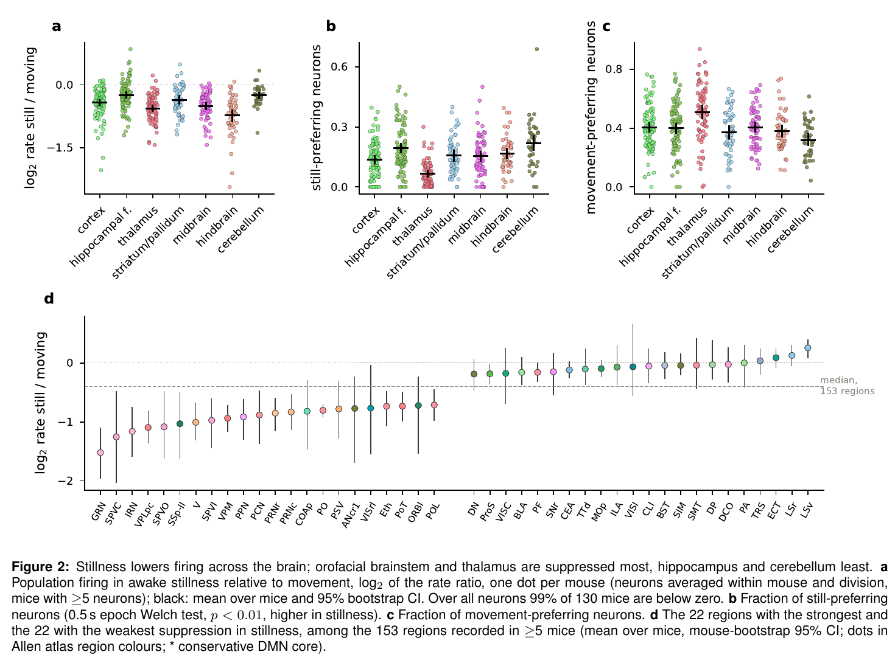
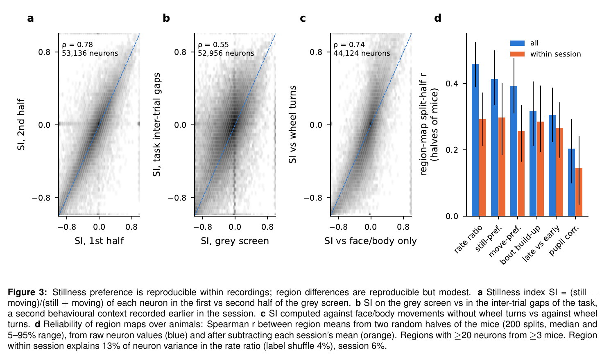
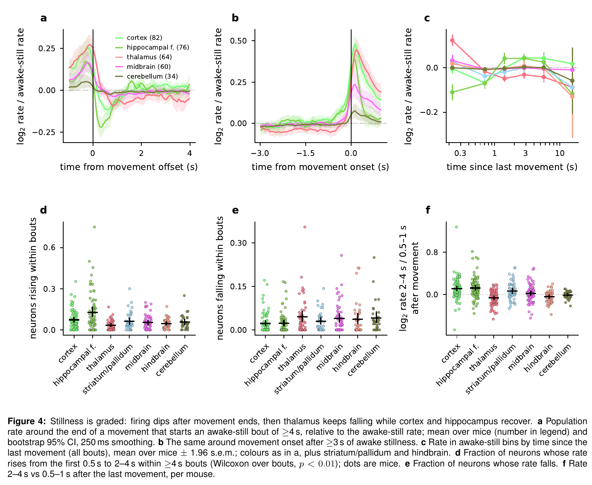
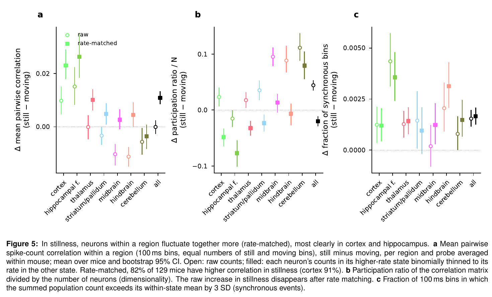
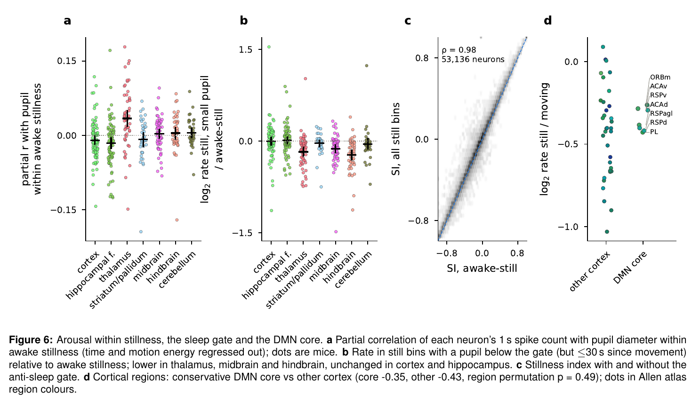
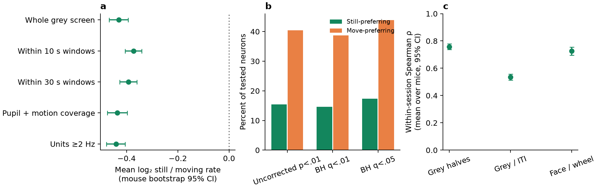

IBL Brain Wide Map · default mode network follow-up · v2, 27 Oct 2026 · reviewed and sensitivity-tested
Neural correlates of stillness
International Brain Laboratory, Michael Schartner, Claude Opus 5.5
The grey-screen report looked for default mode network activity at rest and found little that is specific to the DMN regions. This follow-up asks a broader question. During behaviourally defined, putatively awake stillness, what changes in neural activity, which changes hold across animals, and which are specific to brain areas? It uses the same passive grey-screen block and the same movement thresholds. To this it adds a pupil-and-duration filter intended to reduce drowsy periods and the single-cell techniques of the report that held up best: interleaved still-vs-moving contrasts within one period, per-neuron tests on spaced samples, mouse-bootstrap statistics and within-session comparisons. “Awake” is a behavioural proxy throughout; no independent sleep scoring was performed.
Abstract
Data. 53,136 neurons (≥0.5 Hz) from 389 BWM sessions and 130 mice. On the grey screen each session has a median 5.6 min of awake stillness and 2.4 min of movement.
What holds in nearly every mouse, across the brain:
Lower firing. The geometric mean of pseudocount-adjusted neuron rate ratios, with equal mouse weighting, is 26% below movement (log2 ratio −0.43, CI −0.47 to −0.39), in 129 of 130 mice and in every major brain division.
A stable minority of still-preferring neurons. 15% of neurons fire significantly more in stillness and 40% significantly less. Still-preferring neurons occur in 126 of 128 mice and in every division.
Preference is reproducible within the recording. It replicates between halves of the grey screen (ρ = 0.78), in the task's inter-trial gaps (ρ = 0.55), and for face-only versus wheel movements (ρ = 0.74).
More local synchrony. With firing rates matched by spike thinning, neurons within a region are more correlated in stillness in 82% of mice (cortex 91%). Synchronous population events are more frequent (81% of mice). Early-versus-late comparisons provide no clear evidence of further synchrony build-up.
Movement-locked transients. Firing rises about 0.3–0.5 s before a movement leaves stillness. After a movement ends, cortex and hippocampus briefly dip below their still level.
What is area-specific (region maps reproduce between halves of the mice, r = 0.46; region within session explains 13% of neuron variance against 4% for shuffled labels):
Thalamus is most movement-driven (52% movement-preferring, 6% still-preferring; VPM and PO 64–65%). Its corrected 2–4 s versus 0.5–1 s contrast is negative in 67% of mice. It is also the only division whose firing follows pupil size within stillness (73% of mice), and it is quieter in still periods with a small pupil.
Hippocampal formation (DG, SUB, ENTm) recovers and rises within long still bouts. It has the most neurons rising within bouts (12%), the largest rate-matched synchrony increase and the most synchronous events.
Still-preferring neurons are enriched in cerebellar nuclei (DN 32%, IP 30%) and lateral septum (LSv 38%, LSr 33%). Equal-mouse region means are positive in LSv and LSr; BST is slightly negative. These uncorrected regional classifications are exploratory.
Orofacial brainstem (SPVC, GRN, PSV, SPVI) is suppressed most, as expected for face motor and sensory nuclei.
Cerebellum goes the opposite way at population level: less correlated and higher-dimensional in stillness.
The conservative DMN core shows no detected difference from other cortex on these measures (rate ratio p = 0.49).
1. Awake stillness on the grey screen
The grey screen follows the task (a median 1.1 min after the last trial) and lasts 5 or 10 min. Stillness comes in short bouts, mostly under 2 s, separated by brief face and body movements (Figure 1).
Why a sleep gate: head-fixed mice can enter NREM sleep with their eyes open after tens of seconds of immobility, and their pupil constricts. Still bouts longer than 10 s had a median pupil of 0.91× the task median.
What the gate removes: stillness with a pupil below the session's task-period 10th percentile, or more than 30 s after the last movement. In the 342 sessions with pupil tracking it removes a median 7% of still time (IQR 1–26%). 50 sessions contain any stillness longer than 30 s.
Sessions without sufficient pupil coverage (47) are gated by the 30 s limit only. The stillness index is nearly identical with or without the gate (ρ = 0.98, Figure 6c).

2. Stillness lowers firing almost everywhere
Each neuron's rate in awake-still bins is compared with its rate in moving bins of the same grey-screen period, interleaved in time (Figure 2).
Division
Rate ratio (mean over mice)
Mice below 0
Still-preferring
Movement-preferring
Hindbrain
−0.73
96%
16%
39%
Thalamus
−0.54
96%
6%
52%
Midbrain
−0.44
93%
18%
39%
Cortex
−0.43
95%
13%
40%
Striatum/pallidum
−0.32
78%
18%
36%
Hippocampal formation
−0.24
82%
19%
41%
Cerebellum
−0.21
89%
23%
30%
Neurons are averaged within mouse, then over mice (mice with ≥5 neurons in the division). Still- and movement-preferring fractions are means over mice.
Most suppressed regions: orofacial brainstem nuclei (GRN −1.52, SPVC −1.25, IRN) and somatosensory thalamus (VPLpc, VPM, PO). These follow from the face and body movements that define the moving state.
Least suppressed or enhanced: LSv (+0.26) and LSr (+0.13) have positive equal-mouse region means; TRS (+0.04) and BST (−0.04) are near zero. Region estimates are sensitive to mouse weighting and anatomical coverage.
Still-preferring neurons are not confined to these regions. They are a minority in almost every region, with the highest fractions in CLI (39%), LSv (38%), DCO (34%), LSr (33%), DN (32%) and IP (30%).

3. Stillness preference is reproducible within recordings
Preference estimates correlate across time and behavioural contexts (Figure 3a–c). These are within-recording comparisons, not evidence that tuning remains fixed across days:
Across time: first versus second half of the grey screen, ρ = 0.78.
Across contexts: grey screen versus the inter-trial gaps of the task, recorded about an hour earlier with a different screen and engagement, ρ = 0.55.
Across movement types: against face/body movements without wheel turns versus against wheel turns, ρ = 0.74. This comparison uses the same stillness rate in both indices, which can inflate the correlation. Wheel turns also need not imply running. It supports consistency across movement definitions but does not establish effector-independent tuning.
How area-specific is it? Region maps built from two random halves of the mice agree moderately (Figure 3d). For the rate ratio the split-half r is 0.46 (Spearman–Brown 0.63). After each neuron's session mean is subtracted, so that only differences between regions recorded together remain, r is 0.29. Region within session explains 13% of the variance between neurons, against 4% for shuffled labels; the session itself explains 6%. Most of the variation lies between neurons within a region.

4. Stillness is graded in time
Stillness is not a single state that switches on when movement stops (Figure 4).
Entering stillness: when a movement ends and at least 4 s of stillness follow, hippocampal firing dips about 0.3 s after the offset (log2 −0.2) and cortex about 0.6 s after (−0.1). Both return to their still level within 1–2 s. Thalamus falls more slowly and stays below its average still level for the next 4 s.
Deepening stillness: from 0.5–1 s to 2–4 s after the last movement, cortex (+0.12, 79% of mice) and hippocampal formation (+0.11, 77%) rise. Thalamus (−0.06, 67% of mice falling) and hindbrain (−0.05, 57%) fall. These corrected values use 2–4 s, not the previously indexed 4–8 s bin. Within true-offset long bouts, a mean 12% of hippocampal neurons rise at uncorrected p<0.01. The separate FDR sensitivity shows that within-bout classifications are substantially less secure than the rate contrast.
Leaving stillness: in every division firing starts to rise 0.3–0.5 s before movement onset, most steeply in thalamus and cortex. Bins 0.1–0.5 s before a movement fire 1–4% above the still average.
Very long stillness (8–30 s after a movement) is quieter in most divisions, but few bins reach it and the confidence intervals are wide. These profiles use different sampled bouts at different durations; they do not by themselves describe the trajectory of a single bout.

5. Neurons fluctuate together more in stillness
Population structure is compared within each region and probe (≥8 neurons) on equal numbers of 100 ms still and moving bins (Figure 5). Correlations and dimensionality depend on firing rate, and rates are lower in stillness, so each neuron's spikes in its higher-rate state are thinned at random to its rate in the other state.
Correlation: raw correlations hardly differ (−0.00008). Rate-matched, they are higher in stillness (+0.011, 82% of mice): cortex +0.023 (91%), hippocampal formation +0.026 (76%), thalamus +0.010 (76%). The largest increases are in SUB, ENTm, VISpm, VPM, VISa and DG.
Dimensionality: the raw participation ratio is higher in stillness (80% of mice), but this is a rate effect. Rate-matched, stillness is slightly lower-dimensional (−0.020; 70% of mice), most clearly in hippocampus and cortex.
Synchronous events (summed population count >3 SD above its within-state mean) are more frequent in stillness (81% of mice), most in the hippocampal formation. These 100 ms events measure the tail of each state’s population-count distribution; they are not identified sharp-wave ripples or a direct measure of excess coincidence above an independent-neuron null.
Exception: the cerebellum is less correlated and higher-dimensional in stillness, even when rates are matched.
No build-up: rate-matched correlation and dimensionality do not differ between early (<1 s) and late (≥2 s) stillness. The early-versus-late comparison provides no clear evidence of additional build-up; it does not establish exact onset or equivalence.
This matches the quiet-wakefulness literature, in which cortical membrane potentials become synchronised and slowly fluctuating when whisking stops (Poulet & Petersen 2008). Here it is a robust, mostly forebrain correlate of stillness that pools across animals.

6. Arousal within stillness, and the DMN core
Pupil size is a proxy for arousal. Within awake stillness, and after removing slow drift and residual face movement, does firing still follow the pupil (Figure 6)?
Not brain-wide: the mean partial correlation is +0.006 and positive in only 58% of mice.
Thalamus is the exception: +0.026, positive in 73% of mice. The strongest regions are VPM (+0.09), PO (+0.08), VM (+0.07) and TRN (+0.07), followed by LD, VPMpc and VPL. Higher visual cortex (VISam, VISpm) is slightly negative.
Small-pupil stillness (pupil below the gate, but within 30 s of a movement) is quieter than awake stillness in thalamus (−0.16, 82% of mice), hindbrain (−0.22) and midbrain (−0.12). It is unchanged in cortex and the hippocampal formation.
Interpretation: thalamus carries a graded, arousal-linked signal within stillness, consistent with its continued decline as stillness lasts (section 4). The corresponding division averages in cortex and hippocampus are weaker; this does not exclude neuron-specific or nonlinear arousal effects.
DMN core: the conservative core (ACAd, ACAv, PL, ORBm, RSPagl, RSPd, RSPv) has no detected difference from other cortex: rate ratio −0.35 vs −0.43 (p = 0.49), still-preferring 17% vs 14% (p = 0.36). This agrees with the grey-screen report's conclusion that the core is less movement-modulated than other cortex but not specifically rest-active.

Sensitivity analyses added in v2
Lower firing survives local time matching. Each 10 s or 30 s window must contain ≥0.5 s in each state, with ≥5 qualifying windows per session. Rates are averaged equally over the same windows in both states, then neuron log ratios are averaged per mouse. The 10 s analysis retains 388 sessions and 130 mice. It reduces the magnitude of the contrast but retains a negative estimate in every sampled division. This limits an explanation based only on slow drift, while changing which periods contribute; it is not a causal estimate.
Rate sensitivity check
Mean [95% CI]
Mice
Whole grey screen
-0.430 [-0.468, -0.394]
130
Within 10 s windows
-0.372 [-0.406, -0.340]
130
Within 30 s windows
-0.393 [-0.427, -0.360]
129
Pupil + motion coverage
-0.436 [-0.475, -0.397]
119
Units ≥2 Hz
-0.441 [-0.479, -0.405]
130
Multiplicity. Across all finite neuron epoch-test p-values, Benjamini–Hochberg q<0.01 retains 14.6% still-preferring and 38.7% movement-preferring neurons. These are pooled fractions of tested neurons, not equal-mouse averages. Both q<0.01 and q<0.05, and a separate correction for within-bout tests, are saved in 22_robustness.json. Original Figures 2 and 4 retain their explicitly labelled uncorrected p<0.01 classifications for comparison. FDR correction does not repair miscalibrated p-values from temporal dependence.
Within-session replication. Correlations computed separately in sessions with ≥20 complete neurons, then averaged within mouse and over mice: grey halves: 0.758 [0.738, 0.778]; grey versus ITI: 0.536 [0.512, 0.558]; face versus wheel: 0.727 [0.696, 0.755]. CIs resample mice (4,000 draws). The face/wheel comparison still shares its stillness baseline; neither these estimates nor the pooled correlations establish a fixed tuning property.
Paired DMN comparison. Within each mouse, region means receive equal weight within the core and other cortex; only mice with both sets contribute. Core-minus-other log₂ rate contrast: -0.010 [-0.180, 0.161], 39 mice. This targets a different estimand from the region permutation test; incomplete anatomical sampling remains a limitation.
Population validation. Both states now use identical nonconstant neuron sets separately for raw and thinned comparisons. Residual matched log₂ rate contrast is -0.00091 [-0.00151, -0.00034]. Thinning is stochastic and matches expected rates, not exact realised counts. It does not remove shared slow fluctuations or establish excess synchrony against an independent-spike null.
Timing corrections. The 2–4 s contrast previously indexed 4–8 s; this is corrected. Movement-offset bouts must start two 50 ms bins after an actual movement (allowing the margin), rather than at pupil-gate crossings. Aligned windows must lie entirely inside the analysed grey block. Figures and bout tests have been recomputed.

Figure 7. Sensitivity analyses. Rate effects and session correlations use equal mouse weighting; neuron classifications show pooled fractions. Face and wheel indices share their stillness baseline.
7. Summary: robust versus area-specific correlates
Correlate of awake stillness
Across animals
Where
Lower population firing
Robust 129/130 mice
All divisions; most in orofacial brainstem and somatosensory thalamus, least in hippocampus, cerebellum and septum
A minority of still-preferring neurons (15%)
Robust 126/128 mice
Everywhere; enriched in cerebellar nuclei and lateral septum; depleted in thalamus
Preference is reproducible within a recording
Robust ρ 0.55–0.78
Brain-wide
Higher within-region synchrony, rate-matched
Robust 82% of mice
Forebrain (cortex 91%, hippocampus, thalamus); reversed in cerebellum
More synchronous population events
Robust 81% of mice
Largest in hippocampal formation
Pre-movement rise 0.3–0.5 s before leaving stillness
Robust
All divisions
Post-movement dip, then recovery within 1–2 s
Area-specific
Hippocampus and cortex
Continued decline with stillness duration
Area-specific 57–67% of mice
Thalamus, hindbrain; cortex and hippocampus rise instead
Firing follows pupil within stillness
Area-specific 73% of mice
Thalamus only (VPM, PO, VM, TRN)
Lower firing in small-pupil stillness
Area-specific ~80% of mice
Thalamus, midbrain, hindbrain; not cortex or hippocampus
DMN core differs from other cortex
Not detected
p = 0.49 (rate), 0.36 (still-preferring)
The most robust correlates of idleness are not regional. Firing drops, local populations synchronise, and a stable minority of neurons in almost every region fire more. Regions also differ in their descriptive time profiles; division differences have not been established by formal interaction tests. In thalamus it keeps deepening with time and with pupil constriction. In hippocampus and cortex there is a brief undershoot after movement and then a synchronised, partly recovering regime. A brain-wide "idle" signal therefore lives more in population structure and in a distributed population of still-preferring cells than in any single area.
Possible next steps: classify neurons by their stillness-tuning curves (rate vs time since movement) instead of by division; test whether still-preferring neurons in different regions co-fluctuate across probes on the grey screen; and look at the hippocampal synchronous events with LFP to see whether they are sharp-wave ripples.
Methods
Data
The per-session extraction of the grey-screen report (bwm/10_extract_full.py): 50 ms spike counts of good units over the whole recording; wheel speed, licks, left-camera motion energy and pupil diameter on the same grid; the passive spontaneousActivity interval, first second skipped.
Sessions need ≥30 s of awake stillness and ≥10 s of movement on the grey screen; neurons need ≥0.5 Hz overall. Result: 389 sessions, 130 mice, 53,136 neurons.
Per neuron (Figures 2–4, 6)
Rates in awake-still and moving bins of the grey screen, in each half of it, in the task's inter-trial gaps (BWM trial mask, trial end to next trial start), against face/body-only bins (motion energy, no wheel, no lick) and against wheel bins.
Test: 0.5 s still epochs (all bins awake-still) against 0.5 s moving epochs (≥5 of 10 bins moving), keeping the first epoch of each kind per 2 s to reduce dense sampling; temporal dependence can remain; Welch test, p < 0.01. Median 197 still and 141 moving epochs per session.
Within-bout change: awake-still bouts of ≥4 s that begin when a movement ends (median 12 per session); first 0.5 s vs 2–4 s; Wilcoxon over bouts, p < 0.01.
Time profiles: rate in awake-still bins grouped by time since the last movement and to the next movement (0.1–0.5, 0.5–1, 1–2, 2–4, 4–8, 8–30 s). Event-aligned rates around movement offsets (start of ≥4 s bouts) and onsets (after ≥3 s still); population curves are ratios of mean rates per mouse.
Pupil: 1 s bins fully awake-still (≥60); partial Pearson correlation of spike count with pupil, with time (quadratic) and motion energy regressed out of both.
Population (Figure 5)
Per region and probe with ≥8 neurons: 100 ms bins whose two 50 ms bins are both still or both moving; the same random number of bins per state (≥200).
Mean pairwise Pearson correlation; participation ratio of the correlation matrix divided by the number of neurons; fraction of 100 ms bins with summed count >3 SD above the within-state mean.
Rate matching: each neuron's counts in its higher-rate state are binomially thinned by the ratio of its two mean rates.
Statistics
Across animals: neuron (or region-probe) values are averaged per mouse, then over mice; 95% CIs by bootstrap over mice (2,000); "mice below 0" is the fraction of mouse means with that sign.
Region maps: regions with ≥20 neurons from ≥3 mice (192 regions; Figure 2d uses the 153 with ≥5 mice). Region point estimates average per-mouse region means, matching the bootstrap intervals. Reliability retains neuron-weighted region maps: the median Spearman r between region means from two random halves of the mice (200 splits); the within-session version subtracts each neuron's session mean first.
Variance explained: sums of squares of session means, region means and region-within-session means; the null shuffles region labels within session (20 shuffles).
DMN core vs other cortex: region permutation (20,000) and mouse bootstrap, as in the grey-screen report.
Caveats
Movement defines the contrast. "Moving" includes small face movements, so part of the stillness effect in sensory and orofacial regions is the absence of reafferent input. The face-versus-wheel comparison shares a stillness baseline and does not separate motor from sensory causes.
Post-task rest. The grey screen follows an hour of task under water restriction, and the inter-trial replication comes from the same session. Naive rest may differ.
Inference limits. Neuron p-values depend on residual temporal autocorrelation. A 2 s window rule does not guarantee independence or minimum 2 s separation at window boundaries. Correlation changes may reflect slow shared drift or state mixtures. Rate thinning does not control these confounds. Non-significant contrasts, including early-versus-late synchrony and DMN comparisons, do not establish equivalence.
Sleep gate. “Awake-still” is an operational label, not a validated sleep classification. Pupil is an indirect sleep marker, and there is no LFP or EMG here. The gate changes the stillness index very little, and the small-pupil comparison suggests that drowsy-looking stillness mainly lowers thalamic and brainstem firing.
Time resolution. Spike counts are at 50 ms and population measures at 100 ms. Ripples and fast oscillations cannot be resolved.
Missing wheel data. 57 of the 389 sessions (13 mice) have no wheel trace on the grey screen; there "moving" rests on motion energy and licks alone. Without these sessions the results are unchanged: rate ratio −0.43 (99% of mice negative), 14.8% still-preferring neurons, rate-matched correlation +0.011 (84% of mice).
Unequal coverage. Divisions and regions are recorded in different mice; within-session versions of the region maps are reported for this reason.